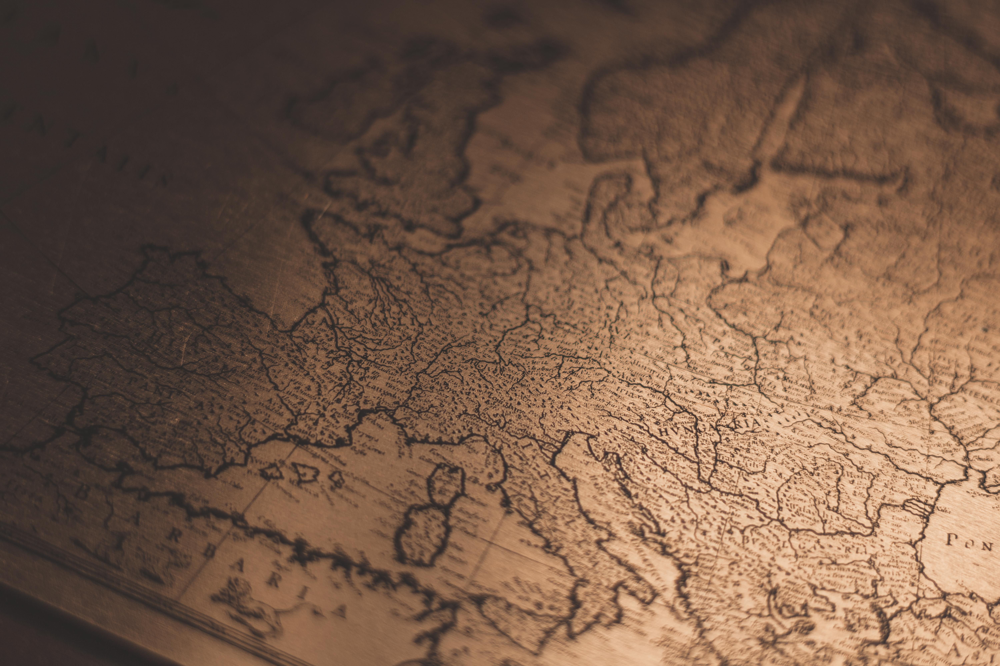

나의 9박11일 유럽여행 보고서

화면속으로만 볼 수 있었던 유럽을 다녀올 기회가 생겨서 어머니와 다녀오게되었다.
유럽은 볼 것이 많다고 들었기 때문에 패키지 관광을 선택하게 되었고
언제 또 가게될지몰라 6국 12일이라는 장기 코스를 선택하게 되었다.
2019.11.30 ~ 2019.12.11 기간동안 보고 느낀 것을 페이지에 담아보려고 한다.
#List of Schedule#
9일차 12.08 - 프랑스 파리
10일차 12.09 - 프랑스 파리
11일차 12.10 - 영국 런던